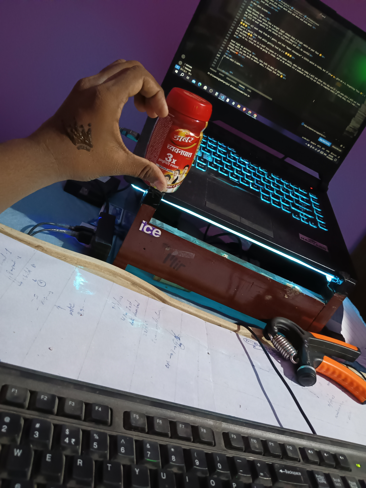

🌸 -🎓- 🌸
Aiesteru
its truly beautiful isn't it... when he said .....
“To love without condition, to talk without intention, to give without reason, care without expectation, “Love is nurtured by trust, respect, and understanding.” that's the spirit of true love.”
“It is a love that is beyond the physical, and it is a love that is spiritual. It is a love that is eternal.”
“If you really love that person, learn to wait. Maybe you are not meant to be together today, but meant to be in the future.”
“Love is the energy that binds souls together.”
"If you want to understand love, don’t use your eyes. Open your inner eyes because the truth is not associated with beauty. It’s related to emotion."
“A man is made by his beliefs. As he believes. So he becomes.”
“There are three gates to self-destruction and hell: Lust, Anger & Greed.”
“I have a purpose for your pain, a reason for your struggle, and a reward for your faithfulness. Trust me and don’t give up.”
“I regard as great even the smallest gift offered by my devotees in pure love, but even great offerings presented by non-devotees do not please me.”
“Blessed is a human birth, even the dwellers in heaven desire this birth, for true knowledge and pure love may be attained only by a human being.”
“The Key to happiness is the reduction of desires.”
“Do everything you have to do, but not with ego, not with lust, not with envy but with love, compassion, humility, and devotion.”
“Calmness, gentleness, silence, self-restraint and purity: these are the disciplines of the mind.”
how beautiful it is to listen to that person krishna, how amazing feel it give us when we made up ourselves to follow those words...
08-nov-2023 10:20PM
konichiwa Mitsuha chan ^-^
*What you feel in your heart? What you mean?
before i answer this question, i want to know something from you. so, tell me how you feel when you open the letter i send to you by penom
i don't know still you get the answer or not, in my words that feel is something like, a warm feel in heart times whenever i think of you, after a little pray to god from soul for you to be safe without even noticing.
it kind of feel like whenever a girl approach near to me it push me back a step to be in my boundaries,
a kind of feel, even after seeing couple around still bring a smile from inside to keep remind my always beside me in soul , a magical feel can't be expressed in words.
a kind of feel, when about to feel tired and hard about studies it made me remeber and say the amound of time waste you do now is the amound of time disneyland trip moving forward.
the feel, it always say to live a truthful life even the world around is rotten, being pure is just a self gifted wish amd a lot more which can't be expressed in words. and in more time made us understand how beautiful it is...
*Okay then let me see how you will earn my trust!☠️
i guess i don't need to do anything special/magical to earn your trust, just like all the time going in a right path is good ^-^
* I don't think I can be a motivator for anyone, I am just interested in earning some handful of money with 50% of profit 🤷🏻♀️
you know what, we dont know what our actions do sometimes, like sometimes its a normal thing for us to do but in some mind it just a goden shine to wake up and to start to move toward dreams
example: did i said you this? after i show off a guy name 'pavan' my senior become friend with me and he one who started walk with me in college route from few days one day he said he inspired by me a lot and purchased a laptop to start to build his core skills, best part he stopped caring about girls around him😂😂😂 still asking me how to be in selfcontrol😂😂
i lost my mind after this just like you not knowing that you inspired and motivated me without even knowing, so in theory you the one who motivated this guy 🤔🤔🤔 youre the one who behind everything ...
potato chan... you are my hero, my sweet potato 😋
*Maybe you getting sick because you bath after you go home after the full day of hardwork, so do a thing, don't bath just wash your hand and feet because of weather change and whole day tiredness in end you bath for long hours so you getting feaver, so don't bath for long and
yaaa it make sense ummm..., i will try to not to bath in late night if i feel its not possible i'll try to make it fast as possible, huh.. and still i hold little feaver i guess it will be fine soon due to weather change i got a little cold and cough too
*oi you don't have to fast twice a week for me, Are you crazy? Arry by that "I don't know" I mean I am not getting sick nor I am perfectly fine. I have got bad cold cough 😷 and my head paining because my specs broke.
im only doing once in a week and it is only saturday, and you know what the last saturday at gitam the special dinner and my started playing with me after i said i do fasting at saturday😅,
arey this cold stuck in your blood -_-, huh... dont eat much ice-creams okkk!!
oii how your spects got broke again, are you doing eye exercises and drinking more water everyday...?
09-nov-2023 8:43PM
i guess not im fine and oiii i bought the bottle today evening at a medical store in other words i visited 5 stores and one got it for me
*Ya I got jealous of you,🤷🏻♀️I will explain later in detail, I don't get jealous of girls i never got till now I got fewer time from boys. Well there is a reason behind
huh it stilll quite a different thing, aside my mind still wanna know knnow. don;t mind
*Now when you are home now show you 92% present marks! Show show show!

so here is my marks sheet but its not final exams of this semister, semister exams ahead at december so i'll try mybest to get the best there
* I actually mean it.. so don't get fever now even don't get later.. cause I am not there 🙄
sure😊 i'll try mybest to not get sick and follow each thing you said, and i even gonna eat that the "dabur chat...." yak its so weird in taste, and im gonna take it daily
*When did I care about you ? 🤔 I don't care.
ooooooooooooooh, okok !!!!!!!!!!!!!!!
just think again ^-^
* how to look into your eyes? By the way your eyes are kinda scary, but I like your eye lashes
when i come close to you then look straight into my eyes
how come crazy 🤔 when i have fans for those eyes 🤔🤔🤔
eye lashes -_- dont say kajal or something ok those are real...
*Hey if you love me from your bottom of your heart then who is at top ?
this is really an appreciatable thing you know, when i start to pray for you from that day god the one is at top and what god said is "love you wife like you love youself, always be honest and loyal to her.".
*From how long you have been in love with me? Cause you hear mentioned before hearing and seeing me.
its after feb 17 2023, and its true im in love with you before even see you in real, listen to your voice and tell me this, don't you know this my cute sweet potato
*So wait ! You don't flirt, that's is kinda boring then😂 cause it have been 6-7 months that I enjoy flirting (to a certain limit)
🙄🙄 so ok then i'll try to learn how to flirt if i could possible, if i fail to learn flirting forgive me in this 🙄
*Woo! That is cool that you making up stories based on my nightmare and your dream.. you are creative, well this gives me a idea for staring a story..
arigato ^-^
now i can't wait to see your story output 😊
*Now show me your project like wha kind that ai one bla bla bla !! Show !
arey its lines of code and previously i send you a picture saying my project that the only physical for it hold rest lines of code. and those line are so many so if manage to develop an GUI then it will help we to show you till then its a screen holding lines of english and some random letters
in other words stupid things heheh
* what is January 1st pic deal?
-_- you forgot ... ok leave...
Problem in phone.. you always in problem in phone and laptop -_-
who know my phone always wanna take renge on me -_-
but now its little fine, mom saying if i dont buy a phone myself soon, she will do it then, cz few days back you know it right i missed train and reached home around 1AM thats why she got a little mad at me about phone
*Before you read you took pictures.. arry something like this happened at September month you were saying something but before I read I did that (i forgot what it was exactly)
yes yes there something happend not once several times before september like at book and you nails and few other things you sent me before i asked you
just like that something happpened in september, that what i remeber is the star symbols for each line you wrote. you did this one before i ask you to do.
*OII DON'T dare to stay awake late night.. go to bed at 11 and wake up at 5 on working days.. and and weekend sleep 8+ hours
okok 🙄, if any of my teacher gave any extra work i'll say them, my girl said me to sleep properly so sorry for your works😁😁😁
and i definitely gonna sleep around 11 and woke up around 5 for sure and 8+ at holiday also for your my princess
*I am not stupid and I am not a Potato! You tomato 😾 and you had your phone with you.
even i had phone with what can i do with it, i rarely got call to talk and almost only amma and father do those, then the who always used to be there just like always beside me takind each moment is you those days, and i guess i dont even need phone most times.
my potato my heart feeling so light, happy peaceful after talking to you that long thatnks a lot,
and you know i even slept 2 hours in college today then teacher came to plant a tomato plant on my head 😅 , and some unknow stupid from my class drawn a cirle on my cheek eye lash -_-
stupid kids
*I have brain that is why I can think and all my life I have been ignored, bullied, and treated like I am none ... So how can I think something good about it ! ... Whoever promised me those break it so played with feelings so how can I think something good 🤕 sorry I over reacted
turnleft see im always there with you, just a little time i'll be there physically appear to you, that day i'll prove your boy don't know how to break promise, and dont know how to play with feelings.
my cute potato, you always a special person, my lucky charm
my only cute sweet potato lucky charm
*Couldn't you read what I wrote with mehndi? There are two Japanese letters
😋 who know hehehe
* what is the difference between "I love you" and "love you" ?
there it is something seem no difference but in depth it mean a lot, in my case, i feel like
' i love you' is come from heart when selfish like making though in individual like that,
'love you' when i say this i start to notice the feel we are one, i dont know how to express this. a kind of thing only to feel, hold no words
Damn it ! BAKA BaKa ! You made me tear up this time.. why say so.. i still don't get it how we end sup in this lovy dovy stuf , like for how long this have been going on .. and the fact is even I have feelings for you and I can't stay with out contacting you , some how you make me feel good, you be one of the reason I smile for heart.. Baka!
exactly this what i mean by my heart always cherish by your thoughts ,im heartfully feeling so happy atleast i made you smile 😊
i wish that smile on your face be even brighter and i want you to be happly all the time with no worries ^-^
Arigato potato chan!!! 😊
You need me in life but for what? And if you don't know how to talk to girls, than what am I a boy ? Hehe silly me .. but your words just hit through my heart and make me feel like you fall in love with you blinly,but to say truly I am scared, let me explain you later about my fear.
i need you, what all i know that i truly love you, if i found a reason i'll definitely say it to you
huh what i mean is im still a shy person, 👉👈
you know what how shy i am, huh there in train i need to goto next block but in the way there around so many girls stand, im too shyed out to ask them to give me side
-_-
i waited till to next station to cross the coach
when come to you ... sometimes i still get shy when i imagine you👉👈
in class when i get thought of you i blush smile without reason...👉👈
aside you are my confidence that you motivations and all help me always to give presentation direct at black board, those times most call me attitude nerd -_- , people are creepy
*Wow the picture are so amazing.. S you click the pictures? How can I believe you that you clicked in none you there?0
ummmm i guess videos will helo you to know those are by me hehhe
*Oh damn , you turning into eye candy! Wow what an anime transformation you got 😮 how the hell you did that so fast, I knew you can do well but this fast and so cool ( kakkoie/ sugoi) * you know right that I like to adore pretty things,, weather it is girl or boy or any animal, os looking at them like you want it is called EYE CANDY
👉👈 arigato, im little shy again now, and the transformation is done by commitment and dedication, and just wait a little long to see six pack hehe 😄😄
so now tell me, "im asking the same question once long ago i asked you": ' is it possible to make things in real through dedication and commitment?' i guess i gave you a little prof, and this is not the real one, the right one is ahead 😄
*So amazing you are , I wish I could do good changes like you .
its simple, did you rember in letter i mentioned you that 21 dsay challenge just start over again from scratch if you fail in between then i will surely put you in a discipline
*So did you enjoyed and learned something new from your trip or compitition!.. And what happened next in your compitition are you selected for next round or something?
enjoyed... i enjoyed when i got time to roam alone and those times i shown you the campus, and you know what i got a chacne to talk to a international famous scientist and inventer, i discussed him about a idea he said if i manage to work hard i can build something great then i got his linked-in contact
then i met a person name raju from bengaluru i and he got to meet at some point of business idea, i dont know it may work or not but in end of jan 2024 we gonna try on it
the competetion ended there and we got participation certification only and in another solo competetion i got a rank of 1402 out of 2 lacks and this girl Priya sister got 1607
upnext the only results pending is smart indian hackathon. my fear is what should i do if this and exams were held at same time...
* Arey you could read what I wrote in my plam.. even you wrote, huh! But what you wrote below mitsuha? By the way it looks kind of cool
im happy you liked it and what i wrote under mitsuha is
i Love you👉👈
* Wait what! You got water in your eyes because of i wrote taki .. you are such a silly tomato 😂
🙄 i dont know it happen like... after i saw picture of your hand i read then tears start fell...🙄
* hey hey , I don't mind that you said little or you said so much like novel.. I like both less and more , it's just that I like to read it from you .You are positive and amazing. Plus there is this unknown feel which I don't exactly understand.
and i only like to say/write to you only maybe im saving all my mind and soul to talk to you👉👈
hehe
i love the way you care even a little effort, from backthen im even seeing and you even made me wonder that going throught so long back text's which you hadn't chance to see, you are always my wonder women
my lucky charm
*Hey , you know what there are so many things left to let you know about my current life situation which going on ..... Remember after navratri I wasn't texting for more few days it was because I went on family with my parents, we went to Assam and Mahalaya by car, and came home at 31st October
ohh wow, i guess it might a little refreshment for you, at navarathri time i thought due to daily pooja and all you didn' got time to text.
and the things, say me when possible and as long as you are safe and happly thats a happy thing for me...
*You see this same in one year only we went to oddisa at March and Assam and Mahalaya at October, from small I have been traveling 80% of India's beauty I have seen .. now only few places left and some of the places I want to revisit with you like (Kashmir, Andaman, Mumbai, etc) it would be so much fun isn't it! And the whole world is left , hehe
sure😊 im definitely ready to roam all the places with you, its so fun and lot more unexpressable. sure lets revisit the places what you want to, and there i can get a non stop adorable speaker who explain everything to me isn't it
*By the way I just checked out you YouTube channel, you have so less viewers and almost no likes , I have and I idea for you channel to go famous you have to do some changes, wait let me write and then explain you , ok ? Will you do it as I say about your YouTube channel? And don't get offended it I say anything ok!
for now this channel is only for you and i planning if i get chance i'll try to make content again, and happy to know i gonna get suggestion and all from you ^-^
im waiting for you to say and oii dont rush take your time its not an emergency
*By the way your videos are prove enough that those pictures were take by you .. you have a great voice but you need to work on you accent and pronunciation ok ! I like the way you speak tho!
arigato
oi you know actually while im filming there are so many people out there, aside reels making candidated, commenting guys, in between all shy candy me.,, huh.. moreover i manage to made video out of shyness in public in day time with voice for the first time to show you, from next i'll try better
*Your transformation is so cool like really looking so handsome (it is more like 🔥 hot) but I liked you even before the transformation you know. Your determination and improvement is mind blowing. Keep it up. I will cheer for you . I WISH I COULD BE LIKE YOU 🥺 Kakkoi !
arigato im going shy over and over by your words 👉👈
oiii why to be like me when i love you a lot lot more when you are the way you are, you are my lucky charm ^-^
and you know what you are the best always its you
love yourself, be yourself. the way you are, the most most beautiful and precious thing to me in the world
My lucky charm
you are the best always
*I still don't believe it you are so much better than me, such so amazing person and you treat me so kindly the way I always want to feel valued 😭 why would you even like or love a person like me. I am so immature, no time sense, I don't understand what people want, always disturb them, oh ! Am not even that is preety, I've health issues. I am no where near perfect . You don't even know why you love me .. what the fish is in water! Sometimes my existence becomes a question.
for you it might be this way, but when come to me, you aren't an choice. i always feel and see you like you are the option exist in life for me, im heartfully thank everyday god while praying you to be safe happy and healthy...
you saying perfect, so tell me what made you imperfect, if you ask me about perfection, i will say perfect word is a lie,
you aren't immature, you mature more enough to be a wise women, you are just childish, my cute little kid. and i love the way you things so much
why health issue a reason to not love a person, if you have health i'll take care of you like my own daughter, i guess those may be a way god put to make more love and understanding between each other in some cases. i still remember the day seeing you hand that way out of patches, that time what i wished god is, 'please make her healthy and happy , i'll do fasting for every saturday, as long as i could' 👉👈 this is one of reason why i refuse to agree to you when you said "dont do fasing in october"
you know what sometimes my thoughts goes like this, do my mom need to have a reason to love me, does he have any reason to love me unconditionally, then i asked the same toward me., i understood loving without expecting anything might be the happiest things ever to soul in this world.
*Plus the things my perents said about stupid female being trapped by male all over the country and the sale them and use them to earn like pros etc ..... The cruel world, so you know what I am actually afraid of. Oh I feel weird.. but I still have this strong feeling for you some what I feel you are perfect and true huMan being . * never mind whatever I said . Sorry, if you upset or offended.. Gomen ne🙇🏻♀️
arey stupid why to say sorry, did i ever get upset by you, you have all the rights to question me straight, and i should definitely answer you.
sometimes im feel so happy that your parents teach you things which make aware to go outside, cz this world really messed up, where my side few week back an incident about a girl i said you, their parents leave her to her freedom not caring much, she started being fiends with her school boys, but things went wrong. the four of her friends whom she trust killed her cruelly that so painful to say
im so glad about this with your parents, in other words its a luck, in some of their behaviour its not.
whatover i wish and pray you to be always safe,
please be safe at outside,
huh!!! you know sometimes i feel to bite you when you say things like, stop acting kind, -_-
remeber this, if you attempt to say this when im infront of you, i dont know where i bite you, i dont gonna show any hetisation. after you question 😅😅😅
so keep in mind and be cafeful ok...
oiii see i bought this

but it take and look so weird, i took a half table spoon it took me 5 minutes to finish a half table spoon, so let me know how to take it in quantity and all
for now i took 200grams pack they said this were only stock exist, i roam around 4 shops all out of stock then at 5th shop i found
and hey its time going around 10:54 PM
so im going to sleep good night sllep well my princess
always love you soooo much more and more and even more
my only princess
love you...
11-Nov-2023 8:41PM
Ohio Mitsuha chan...
Happy Diwali, be shile like a bright light always keep a bright smile on your face 😊
my cute cute sweet potato be careful with crakers okay!!!!
and oiii do wear spects if you choose to fire crackers and all. be careful
my feaver all went away from me i guess, and that "Dabur chavanpras" a little weird in taste, but if you👉👈, give me a k, forgetting "this 🤮", i will like to take it daily 😊
😅😅😅
i guess i would like that while getting feed by a K 😅😅😅
gomen gomen😅😅
oii daijobu i will eat it a half tea-spoon or a tea-spoon daily, when come to today i will eat after this day end if i get woke else i will eat tomorrow
for now im so, tired so now im going to sleep. and as my promise its a weekend so lets try our best to complete 8+hrs of sleep okay, else i may.... give you a punishment of the number of negative hours of sleeps into K hours 😁😁😁😁😁😁😁😁😁😁😁😁😁😁😁😁😁😁😁😁😁😁😁😁heheheh😁😁😁hehehe😁😁😁 so dont skip sleep okay
so
Good night my princess
Sleep well 8+ come in my dreams, lets talk so many of things
Always love you soo much no matter what, I Always love you 😊
My Hinata💝
12-nov-2023 9:18PM
ohiiioooo Mitsuha chan
hope you have a safe and happy diwali
i wanna share something what made me happy today😊
amamma gave me some money and said me to buy crackers myself, and hehe im little excited in diwali, but in i remeber what happen in last diwali, while others and we burning crackers. tesla and other pets in street got so scared of sound, and you know tesla is used to have fear of loud sounds,
i decide to donate a little to orphans in my favourite person name and with alittle i bought dog food to feed street dogs, then saved a little 😁😁😁
and i record some travelling in a route that which i lost few weeks back in college starting days at midnight in a heavy rain, i guess i will upload tomorrow early morning cz now network a little low,
oiii how is your health now
mine just see and rest leaved to your imaginations

not that bad, i just love a little when mixed with a carrot
gomen gomen😅😅but only way to eat it without hesitation...
huh!!! these cracker sounds surround are so annoying, and i also wanna get some sleep hmmm a little tired of travelling all the day, so..
Good night , sleep well, sweet dreams come in my dreams
Always love you my cute sweet potato
14-nov-2023 9:11PM
hey Hinata💝
is everything ok?
you said you may try to reply at saturday, now its been a since we had a talk. my soul bothering a little. are you really?, tell me after that night it woudn't bought you any trouble
hope everything is fine, please be safe okay!!!
.....
please be safe...
🙄 still something bothering a little, please be safe for me.
and... im truly sorry for what hapoened that day in july.
...
.....
...
hey... say me you are fine and alright, please be fine
please be safe
ALways love you
My Hinata💝
good night
15-nov-2023 9:36PM
hey....Mitsuha
hope your are fine. please be fine okay.
how's your day...?
how's your health..?
myself im fine now fever completely gone, and cold also
you know what now i also adapt to take that "dabur chavanprash" twice a day in half table spoon along milk..
but it still a little weird taste -_-
i want to take it by a K from you okay...
you stupid potato if you get chance answer me and mainly dont do any risk okay...
please be safe for me...
if i stay a little long here i may go emotional and you end up stuck in a novel again...
so
Good night, sleep well, do 7+hrs of sleep . drink hot water after woke up. dont forget to trim your nails. please be safe okay
always love you , love you . love you sooo much... and more
🙄 i wanna hug you, and you know that night we talk, i fell a little shy to ask you for a hug... 👉👈
don't mind,
Good night
sweet dreams...
16-Nov-2023 9:03PM
Ai
Ai 💝 my Mitsuha
I am fine , I am not at home I am at kuchbihar; falakata at my father's sister place (we have so many festivals at same time Diwali, Kali pooja, Bhaiduj etc)
ohh okok i umderstood, seems like so many events in a rows there to visit, oii oiiii be careful when go out into rush place ok!!!
Don't worry ok .. i never got time to see your messages and now i just checked it but still couldn't read all , after i reach home I will reply you , please wait. And i don't mind if it turns noble... I will return at 17 Nov evening if they don't change the plan.
okkk i understood you know what i remeber after you said your at your fathers sisters home
the door she broke in a fight 😅😅 gomen gomen this thing direct came in mind after you said your father sister's home
and i understood your situation, don't need to worry those stay there untill you say to clear and have a good time. and oiii please be careful and safe and sound okkk!!!
if you get chance show me the festival images 😊😊😊
and im waiting for you to reply 😊
😅 i guess it already made upto a sort of novel😅😅 gomen
By the way i guess I am saved and safe because of your prayers. Arigato senpai 🙇🏻♀️
😶 hey... does anything happened, are you alright, please be careful okay please....
i can't imagine a future without you...
please be safe all the time okay... and tell me what happened after reaching home
and yes very happy Diwali and I feel so happy that you donet you always have the best ways 💛 your mom is very lucky
Arigato my little girl, and are not you👉👈 like... my... mom 👉👈...
By the way there is so much things to say you .. ,^_^
sure and im waiting to hear all from you😊, and you know what now i imagining if it a call then it may be listening to you all thought way to my college instrad listening to your songs😊
i always love to listen to you my princess😊
By the way are you still afraid of losing me?
Back in days it is a strongly "Yes", once what happened in July I went to a stage I can't define before sending you the letter. I started reading Bible and there i saw a lines saying " Love is patient, love is kind. It does not envy, it does not boast, it is not proud. It does not dishonour others, it is not self-seeking, it is not easily angered, it keeps no record of wrongs. Love does not delight in evil but rejoices with the truth. It always protects, always trusts, always hopes, always perseveres. Love never fails." - St Paul (1 Corinthians 13:4-7)"
Luke 6:31: Do to others as you would have them do to you. Corinthians 16:14: Do everything in love.
Proverbs 3:3-4: Let love and faithfulness never leave you; bind them around your neck, write them on the tablet of your heart. Then you will win favor and a good name in the sight of God and man.
Romans 12:10: Be devoted to one another in love. Honor one another above yourselves.
1 Peter 3:7: In the same way, you husbands must give honor to your wives. Treat your wife with understanding as you live together. She may be weaker than you are, but she is your equal partner in God's gift of new life. Treat her as you should so your prayers will not be hindered.
2 Peter 1:5-7: For this very reason, make every effort to add to your faith goodness; and to goodness, knowledge; and to knowledge, self-control; and to self-control, perseverance; and to perseverance, godliness; and to godliness, mutual affection; and to mutual affection, love.
1 Thessalonians 3:12: May the Lord make your love increase and overflow for each other and for everyone else, just as ours does for you.
Proverbs 10:12: Hatred stirs up conflict, but love covers over all wrongs.
1 Peter 4:8: Above all, love each other deeply, because love covers over a multitude of sins
Corinthians 13:13: And now these three remain: faith, hope and love. But the greatest of these is love.
Romans 12:9: Love must be sincere. Hate what is evil; cling to what is good.
Colossians 3:14: And over all these virtues put on love, which binds them all together in perfect unity.
Ephesians 4:2: Be completely humble and gentle; be patient, bearing with one another in love.
Jude 1:2: Mercy, peace and love be yours in abundance.
John 13:34: A new commandment I give to you, that you love one another: just as I have loved you, you also are to love one another.
Song of Solomon 4:7: You are altogether beautiful, my darling; there is no flaw in you
Hebrews 10:24-25: And let us consider how we may spur one another on toward love and good deeds, not giving up meeting together, as some are in the habit of doing, but encouraging one another—and all the more as you see the day approaching.
While i read these i started to understand after reading this line : if you have faith as small as a mustard seed, you can say to this mountain, 'Move from here to there,' and it will move. Nothing will be impossible for you.” Matthew 17:20-21.1
I start to have faith, huh at first I doubt it is it really then I understood by the history these were written in thousands years ago in different time lines (hundreds of years) different continents different languages. In deep clear by God through these people it resulted a Bible these each person who wrote each chapter, are got healed from dark past by having faith in God then got choosen by God.
From that time when I loose mind..... There i start reading and having faith in what i prayed.
You know what, there is this person she's like a sister to my mother around end of June she gave birth to a baby. Me went to visit later a little play with the baby boy, I asked for a pic but she refuse. A little after she said this " while about 6th months doctors said it's impossible for the baby to have a life, uncle and she started to pray for the baby life and holding faith. Later she gave birth to a healthy boy. She said the whole with tears. From that time I start to have strong belief and faith. And start to pray for you to be safe and happy all the time. From that i start not afraid of loosing what i actually understood is, while having faith having doubts is totally something like loosing faith by self. In something simply what I can explain or what i wanna say in simple to you is, "even having a true little faith in God without doubt can bring the things we need from God when I done by heartfullly by us." I don't know what you understood, If i said anything wrong forgive me, 🙄 I think I wrote another to explain you... But still it's a little i said on times I will say you a lot lot more..
And even more in bedtime stories my cute sweet little princess 😊
If I may i would like to say, after reading the question there i feel something feared in while i cool down myself, cz when I believe that i may go anyfar to not to loose you. And as long as we believe and have faith, nothing will seperate us.
Listen carefully 🧐🧐🧐
🧐If think of asking this question again, keep in mind I'm gonna bite you as many times as you asked me the question,,, understood 🧐🧐🧐🧐..
I always love to bite you 😋😋😋
🙄🙄🙄 gomen gomen
this ... this i wrote another hard for you to read 🙄
sorrry
i guess it would better for me to turn off and sleep cz clock is going to 11:30PM
so Good night my princess😊, my cute little stupid princess, requestion and wishing you to be careful and safe all the time.
sleep well and come in my dream and sit beside me look into my eyes and say all things, i would like to stay like the way listening to you😊
i always love to listen to you
in more always love you more more and more always my princess😊
Aiesteru💝